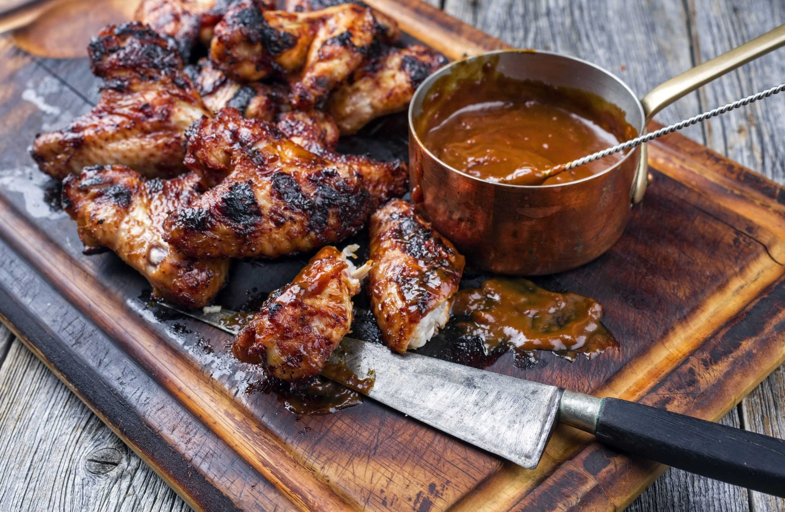

Jerk Chicken

Description
I don't think you guys understand, My mom LOVES Chicken. It has a choke hold over my family to the degree that the likes this world has never seen. Jerk chicken was her way of punishing her children for the sins of our ancestors. They call it Jerk because it bullies your mouth, takes it's lunch money, and leaves it crying pushed in a locker. Your lips will never recover, but they will come back. This is my moms famous Jerk Chicken recipe, enjoy!
Ingredients
- 2 lbs chicken (bone-in, skin-on), cut into pieces
- 1/2 cup green onions, chopped
- 1/2 cup white onion, chopped
- 3-4 garlic cloves, chopped
- 2 Scotch bonnet peppers, seeded and chopped (wear gloves when handling)
- 1/4 cup soy sauce
- 1/4 cup olive oil
- 2 tbsp brown sugar
- 1 tbsp fresh thyme leaves, chopped
- 1 tbsp ground allspice
- 1 tsp ground cinnamon
- 1 tsp ground nutmeg
- 1 tsp black pepper
- 1 tsp salt
- 2 tbsp lime juice
- 2 tbsp white vinegar
Steps
- In a blender or food processor, combine the green onions, white onion, garlic, Scotch bonnet peppers, soy sauce, olive oil, brown sugar, thyme leaves, allspice, cinnamon, nutmeg, black pepper, salt, lime juice, and white vinegar. Blend until smooth.
- Place the chicken pieces in a large zip-top bag or shallow dish.
- Pour the jerk marinade over the chicken, making sure to coat each piece well.
- Seal the bag or cover the dish with plastic wrap, and marinate in the refrigerator for at least 2 hours, or up to overnight.
- Preheat your grill to medium-high heat.
- Remove the chicken from the marinade and discard the remaining marinade.
- Grill the chicken for 6-8 minutes per side, or until cooked through and the skin is crispy.
- Serve the Jamaican Jerk Chicken hot with rice and beans or another side dish of your choice.